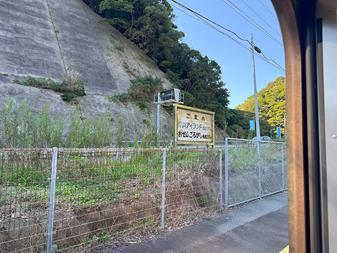

撮影場所：みなとみらい線馬車道駅1a出入口前
撮影：Nick(2024/10/05)
横浜駅周辺を散歩しながら、みなとみらいまで歩いてきたところに
このポストを発見しました！！看板やポスターとは違いますが、
人目を集めるという観点からは同じようなものだと思います！笑笑
ピカチュウとイーブイもそうですが、赤いポストがモンスターボール
色になっているのも面白いポイントですね！
【2日目】
撮影場所：行川アイランド駅
撮影：Nick(2024/10/13)
2001年8月に閉園してしまった、行川(なめがわ)アイランドの看板です！
海が近いのもそうですが、この錆具合とフォントが時代を感じさせますね。
当時は鳥がメインの動物園だったらしく、現在はその跡地が心霊スポット
と化していることでも有名だったりします。
参考：懐かしき 行川アイランド～今は無きリゾート～ "